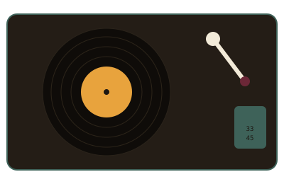

Armar una colección no requiere gastar demasiado desde el primer día. Estos son los pasos que recomendamos seguir en orden, pensados para alguien que recién empieza.
No hace falta el equipo más caro para empezar. Lo importante es que el plato gire a velocidad estable y que la aguja esté en buen estado. Antes de comprar, conviene revisar:
Antes de comprar en cantidad, conviene tener un criterio claro. Algunas personas coleccionan por género, otras por sello discográfico, y otras por época. Un orden sugerido para arrancar:
Un vinilo bien cuidado puede durar generaciones. Algunas prácticas básicas:

El surco de un LP puede medir más de 300 metros de largo, enrollado en espiral desde el borde hacia el centro del disco.